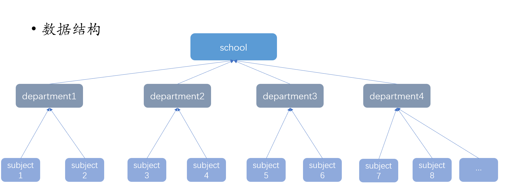
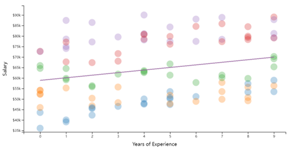
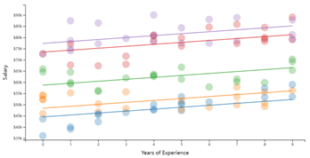
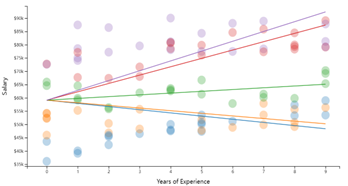
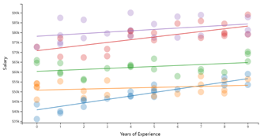
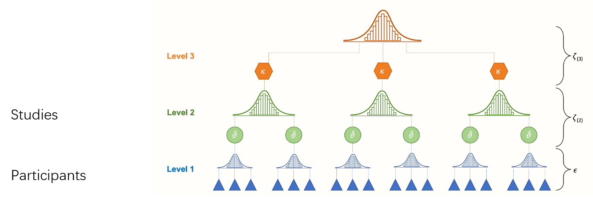
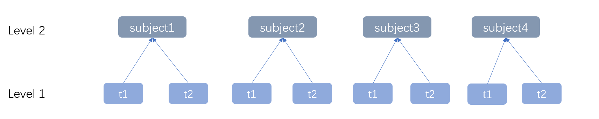

9 分层线性回归
Hu Chuan-Peng
2023-11-7
本次课内容
课前复习
分层线性模型介绍
分层线性模型举例
分层线性模型应用
课前复习
- 离散型自变量的线性回归
- 虚拟变量
- 设计矩阵
- 回归系数
- 其他编码方式
- 离散型因变量的线性回归
- 广义线性模型
- Logit回归/logistic回归
- Poisson回归
分层线性模型简介
分层线性模型(Hierarchical Linear Model, HLM)
分层线性模型/多层线性模型(HLM): 关注”多层嵌套数据”，在一个以上层次上变化参数的线性模型。
- 其他近义词：
- 层级模型（Hierarchical Model，HM）
- 多水平模型（Multilevel Model，MLM）
- 线性混合模型（Linear Mixed Model）
- 混合效应模型（Mixed Effects Model）
- 随机效应模型（Random Effects Model）
- 随机系数模型（Random Coefficients Model）
- 增长曲线模型（Growth Curve Model）
一个线性模型的例子
我们想用工龄预测某个拥有4个学院的学校员工的工资
- 收集到的数据如下
| Subject | Department | Years of experience | Salary |
|---|---|---|---|
| 1 | sociology | 0 | 36095 |
| 2 | biology | 1 | 55254 |
| 3 | english | 1 | 59140 |
| 4 | english | 8 | 78325 |
| 5 | statistics | 1 | 74054 |
| 6 | sociology | 3 | 46508 |
| 7 | biology | 8 | 55648 |
| 8 | english | 2 | 56330 |
数据结构
是否可用工龄预测某个学校员工的工资？
用概率方式表达:
预测项: \(\mu_i=\beta_0+\beta_1x_i\)
观测项: \(y_i \sim N(\mu_i,\epsilon^2)\)
形式化表达
观测项: \(salary_{i,j}=\beta_0+\beta_1x_i+\epsilon,\epsilon \sim N(0,\sigma^2)\)
预测项: \(\widehat{salary_{i,j}}=\beta_0+\beta_1x_{i,j}\)
- \(i\): 第\(i\)个员工
- \(j\): 第\(j\)个学院
- \(\widehat{salary_{i,j}}\):对每个员工工资的预测值，回归线上的点
- \(\beta_0\):全校员工的平均工资
- \(\epsilon\):残差，观测值距离回归线的距离
- \(salary_i=\beta_0+\beta_1experience_i+\epsilon\)
散点的不同颜色代表不同学院
- 在上述这种线性模型中，我们不考虑个体的其他分组信息，假定所有数据同质，所有数据来自一个同分布的正态总体， X（工龄）对 Y（工资）的影响固定。
- 代码形式：\(salary \sim 1 + experience,data = data\)
- 简单模型形式: \(salary_i = \beta_0 + \beta_1 experience_i + \epsilon\)
- \(\epsilon \sim N(0,\sigma^2)\)
回顾一下数据，其来自四个学院的数据。
不同学院的经济水平并不一致，员工工资因此也会有所差异。学院间差异并未考虑在上述简单的线性模型中。
如何考虑这种不同”组”的异质性？
由于不同组（学院）间的差异较大，起始工资不同，X（工龄）对 Y（工资）的影响不同，不同组间在回归模型的截距和斜率上可能有关系。
也就是说，各个学院可能有自己的截距和（或）自己斜率。
这意味着：我们需要以学院为单位进行回归分析：
\(salary_{i,j}=\beta_{0,j}+\beta_{1,j}experience_{i,j}+\epsilon\)
\(\beta_{0,j}\): 模型中第\(j\)个学院的截距；
\(\beta_{1,j}\): 模型中第\(j\)个学院的斜率；
对于上述种情况，我们可以选择的建模方式：
- 无视不同学院的异质性:
\(salary_{i,j}=\beta_{0}+\beta_{1}experience_{i}+\epsilon\) (complete pooling，完全池化)
- 认为不同学院完全异质:
\(salary_{i,j}=\beta_{0,j}+\beta_{1,j}experience_{i,j}+\epsilon\) (no pooling，非池化)
实际上，同一个学校的不同学院的员工的起始工资以及工龄对工资的影响存在相关。是否有介于两者之间的建模方式？
建模方式：
- 无视不同学院的异质性:
\(salary_{i,j}=\beta_{0}+\beta_{1}experience_{i}+\epsilon\) (complete pooling)
- 认为不同学院完全异质:
\(salary_{i,j}=\beta_{0,j}+\beta_{1,j}experience_{i,j}+\epsilon\) (no pooling)
在 no pooling的基础之上增加一层模型？
- \(\beta_{0,j}\sim N(\mu_{\beta_0},\sigma_{\beta_0}^2)\)
- \(\beta_{1,j}\sim N(\mu_{\beta_1},\sigma_{\beta_1}^2)\)
Partial pooling
- 同时考虑到组内同质和组间异质但又属于一个更大的群体的情况。
- Partial pooling，部分池化
情况一
每个学院的起始工资不同，即不同学院的回归线截距不同，但工龄对工资的影响相同。
如按照不同学院分组，绘制回归直线
- 变化截距-固定斜率模型
- 假定不同学院的起始工资不同(变化截距)，但工资与工龄之间的关系在不同学院中相同（固定斜率，\(\beta_1\) ）。
- 变化效应(varying effects): 线性模型中的参数，其随着分组的不同而取值不同，也被叫做随机效应（random effects）。
- 固定效应(fixed effects): 线性模型中参数，其不因分组不同而取值不同，而是仅反映了总体上的参数值。
- 变化截距-固定斜率模型：
- 假定不同学院的平均工资不同(变化截距)，但工资与工龄之间的变量关系在不同学院中保持相同(固定斜率，\(\beta_1\))。
- \(y_{i,j}=\beta_{0,j}+\beta_1experience_{i,j}+\epsilon\)
- 固定效应（fixed effects）：固定的斜率，\(\beta_1\)
- 变化的截距截距(varying/ random intercepts):\(\beta_{0,j}\)
- \(i\): 第\(i\)个员工.
- \(j\): 第\(j\)个学院.
\[y_{i,j} = \beta_{0,j} + \beta_1experience_{i,j} + \epsilon\] \[\epsilon \sim N(0,\sigma_e)\]
\[\beta_{0,j} = \beta_0 + effect_{group} = \beta_0 + b_{0, j}\] \[b_{0, j} \sim N(0,\sigma_j)\]
- \(\beta_0\): 总体(学校)的员工工资的平均值;
- \(b_{0, j}\): 组(学院)的平均值与总体(学校)平均值的差值.
\[salary_{i,j} = (\beta_0 + b_{0,j}) + \beta_1 experience_{i,j} + \epsilon\]
简化: \(salary_{i,j} = \beta_{0, j} + \beta_1 experience_{i,j} + \epsilon\)
- \(\beta_{0,j} \sim N(\beta_0,\sigma_0)\), \(\epsilon \sim N(0,\sigma_e)\)
情况二
- 实际上，工资与工龄之间的变量关系在不同学院中也可能不同(斜率\(\beta_1\)也非相同) 此时我们假定不同学院的基线水平相同(固定截距，\(\beta_0\))工资与工龄之间的变量关系在不同学院中不同（变化斜率）
- 我们假定不同学院的基线水平相同(固定截距，\(\beta_0\))，工资与工龄之间的变量关系在不同学院中不同（变化斜率）
- 变化的效应(varying effect)：X（工龄）对Y（工资）的影响随着分组变量（group，学院）的变化而变化， X（工龄）受到分组的影响。
- 固定截距-变化斜率模型
\[y_{i,j} = \beta_0 + \beta_{1,j} experience_{i,j} + \epsilon\] \[\epsilon \sim N(0,\sigma_e)\]
- 固定的截距(fixed intercepts): \(\beta_0\)
- 变化的斜率(varying/random slopes): \(\beta_{1,j}\)
- \(i\):第\(i\)个员工
- \(j\):第\(j\)个学院
\[y_{i,j}=\beta_0+\beta_{1,j}experience_{i,j}+\epsilon\] \[\epsilon \sim N(0,\sigma_e)\]
\(\beta_{1,j} = \beta_1 + effect_{1, group} = \beta_1 + b_{1, j}\), \(b_{1, j} \sim N(0,\sigma_j)\)
- \(\beta_1\): 总体(学校)工龄对员工工资影响的平均值
- \(b_{1, j}\): 组(学院)工龄对员工工资影响的平均值与总体(学校)平均值的差值
情况三
- 实际上，不同学院的不仅基线水平不同（变化截距, \(\beta_0\)），工资与工龄之间的变量关系在不同学院中也不同（斜率\(\beta_1\)也非相同，变化斜率\(\beta_1\)）
变化截距-变化斜率模型：
\(y_{i,j} = \beta_{0,j} + \beta_{1,j} experience_{i,j} + \epsilon, \epsilon \sim N(0,\sigma_e)\)
\(i\):第\(i\)个员工
\(j\):第\(j\)个学院
变化截距: \(\beta_{0,j}\)
变化斜率: \(\beta_{1,j}\)
- 此时存在两个水平的分析水平
- Level 2：整个学校，是population水平
- Level 1：单个学院，是group水平
变化截距-变化斜率模型
Level2: \(y_{i,j} = \beta_{0,j} + \beta_{1,j} experience_{i,j} + \epsilon\)
Level1:
- \(\beta_{0,j} \sim N(\mu_0,\sigma_0)\)
- \(\beta_{1,j} \sim N(\mu_1,\sigma_1)\)
小结
\(\hat{salary_{i,j}}=\beta_0+\beta_1experience_{i,j}\)
完全不考虑分组，一般线性回归方程
变化截距，固定斜率
\(\hat{y_{i,j}}=\beta_{0,j}+\beta_{1}experience_{i,j}\)
固定截距，变化斜率
\(\hat{y_{i,j}}=\beta_{0}+\beta_{1,j}experience_{i,j}\)
变化截距，变化斜率
\(\hat{y_{i,j}}=\beta_{0,j}+\beta_{1,j}experience_{i,j}\)
- 优点：
- 既考虑群组差异，也考虑到总体情况
- 总体参数与个体数据相互制约（Partial pooling or shrinkage)
分层线性模型实例
Stroop任务试图探究一致和不一致条件下的认知控制能力，实验记录被试的反应时间。
我们想要探究一致和不一致条件对反应时间的影响。
我们可以构建下简单线性模型：
- \(rt_{i,j} \sim \beta_0 + \beta_1condition_{i,j}\)
在complete pooling的情况下，我们可以用概率形式进行表达：
\(\mu = \beta_0 + \beta_1condition_i\)
\(rt_{i,j} \sim N(\mu, \sigma^2)\)
该情况假定所有被试都是同质的，不同被试之间在截距和斜率上没有差别。
简单线性回归
Call:
lm(formula = "rt ~ 1+condition", data = df)
Residuals:
Min 1Q Median 3Q Max
-773.16 -143.16 -35.75 111.84 1344.84
Coefficients:
Estimate Std. Error t value Pr(>|t|)
(Intercept) 681.751 1.174 580.6 <2e-16 ***
conditionincongruent 123.413 1.665 74.1 <2e-16 ***
---
Signif. codes: 0 '***' 0.001 '**' 0.01 '*' 0.05 '.' 0.1 ' ' 1
Residual standard error: 206.7 on 61618 degrees of freedom
Multiple R-squared: 0.08183, Adjusted R-squared: 0.08181
F-statistic: 5492 on 1 and 61618 DF, p-value: < 2.2e-16线性模型参数估计结果
coef <- res[["coefficients"]] # 回归方程系数
beta0 <- coef[1,1] # 截距
error1 <- coef[1,2] # 截距的误差
beta1 <- coef[2,1] # 斜率
error2 <- coef[2,2] # 斜率的误差
df.est <- data.frame(matrix(data=NA,nrow=2,ncol = 3)) # 生成2*3的空数据框
colnames(df.est)<- c('beta','error','condition') # 为每列命名
df.est[1,1] <- coef[1,1]
df.est[2,1] <- coef[2,1]+coef[1,1] # beta值
df.est[1,2] <- coef[1,2]
df.est[2,2] <- coef[2,2]+coef[1,2] # error值
df.est[,3] <- c('congruent','incongruent') # 条件
ggplot(data = df.est,
mapping = aes(x = condition,
y = beta))+
geom_point()+ # 绘制点
geom_segment(mapping = aes(x = condition, y = beta, # 绘制连线
xend = lead(condition),
yend = lead(beta)))+
geom_errorbar(mapping =aes(ymin=beta-error, # 绘制误差线
ymax=beta+error),
width=0.2)+
theme_apa()No pooling的情况下，假定所有被试都是异质的，不同被试之间在截距和斜率上没有关系。
我们将对每个被试进行一次回归分析
\(\mu_j = \beta_{0,j} + \beta_{1,j} condition_{i,j}\)
\(rt_{i,j} \sim N(\mu_j, \sigma_j^2)\)
注：在此情况下，仅是对每个被试的全体数据进行简单线性回归，代码实现上没有区别
简单线性回归
Call:
lm(formula = "rt ~ 1+condition", data = df_s001)
Residuals:
Min 1Q Median 3Q Max
-320.41 -112.41 -41.41 87.58 735.58
Coefficients:
Estimate Std. Error t value Pr(>|t|)
(Intercept) 698.42 23.27 30.011 < 2e-16 ***
conditionincongruent 123.99 33.05 3.751 0.000277 ***
---
Signif. codes: 0 '***' 0.001 '**' 0.01 '*' 0.05 '.' 0.1 ' ' 1
Residual standard error: 178.8 on 115 degrees of freedom
Multiple R-squared: 0.109, Adjusted R-squared: 0.1013
F-statistic: 14.07 on 1 and 115 DF, p-value: 0.0002773线性模型参数估计结果
coef <- res[["coefficients"]] # 回归方程系数
beta0 <- coef[1, 1] # 截距
error1 <- coef[1, 2] # 截距的误差
beta1 <- coef[2, 1] # 斜率
error2 <- coef[2, 2] # 斜率的误差
df.est <- data.frame(matrix(data=NA, nrow=2, ncol = 3)) # 生成2*3的空数据框
colnames(df.est)<- c('beta','error','condition') # 为每列命名
df.est[1,1] <- coef[1,1]
df.est[2,1] <- coef[2,1]+coef[1,1] # beta值
df.est[1,2] <- coef[1,2]
df.est[2,2] <- coef[2,2]+coef[1,2] # error值
df.est[,3] <- c('congruent','incongruent') # 条件
ggplot(data = df.est,
mapping = aes(x = condition,
y = beta))+
geom_point()+ # 绘制点
geom_segment(mapping = aes(x = condition, y = beta, # 绘制连线
xend = lead(condition),
yend = lead(beta)))+
geom_errorbar(mapping =aes(ymin=beta-error, # 绘制误差线
ymax=beta+error),
width=0.2)+
theme_apa()注：由于No pooling是对单个被试单独拟合，故标准误很大。
在no pooling的情况下，由于每个被试之间的截距和斜率都没有关系，每个被试的反应时间都会分别使用单独的回归方程来进行。
在该例子中，由于包含500多个被试，每个被试需要单独拟合一个回归方程，则需要500多个回归方程。
Partial pooling，groups与population的参数相互制约
在RT的例子中，有三种可能的模型：
- 变化截距、固定斜率（M1）
- 固定截距、变化斜率（M2）
- 变化截距、变化斜率（M3）
- M1: 变化截距、固定斜率
Population level:\(\mu_{i,j}=\beta_{0,j}+\beta_1condition_{i,j}\)
\(rt_{i,j} \sim N(\mu_{i,j},\sigma_{i,j}^2)\)
Subject level: \(\beta_{0,j} \sim N(\mu_{\beta_0},\sigma_{\beta_0}^2)\)
分层线性回归
Linear mixed model fit by REML ['lmerMod']
Formula: rt ~ 1 + condition + (1 | subject)
Data: df
REML criterion at convergence: 815596.2
Scaled residuals:
Min 1Q Median 3Q Max
-4.6184 -0.6518 -0.1337 0.5052 6.9891
Random effects:
Groups Name Variance Std.Dev.
subject (Intercept) 11078 105.3
Residual 31777 178.3
Number of obs: 61620, groups: subject, 522
Fixed effects:
Estimate Std. Error t value
(Intercept) 682.236 4.717 144.63
conditionincongruent 124.577 1.436 86.73
Correlation of Fixed Effects:
(Intr)
cndtnncngrn -0.151线性模型参数估计结果
coef <- res[["coefficients"]] # 回归方程系数
beta0 <- coef[1,1] # 截距
error1 <- coef[1,2] # 截距的误差
beta1 <- coef[2,1] # 斜率
error2 <- coef[2,2] # 斜率的误差
df.est <- data.frame(matrix(data=NA,nrow=2,ncol = 3)) # 生成2*3的空数据框
colnames(df.est) <- c('beta','error','condition') # 为每列命名
df.est[1,1] <- coef[1,1]
df.est[2,1] <- coef[2,1]+coef[1,1] # beta值
df.est[1,2] <- coef[1,2]
df.est[2,2] <- coef[2,2]+coef[1,2] # error值
df.est[,3] <- c('congruent','incongruent') # 条件
ggplot(data = df.est,
mapping = aes(x = condition,
y = beta)) +
geom_point()+ # 绘制点
geom_segment(mapping = aes(x = condition, y = beta, # 绘制连线
xend = lead(condition),
yend = lead(beta))) +
geom_errorbar(mapping = aes(ymin = beta - error, # 绘制误差线
ymax = beta + error),
width=0.2)+
theme_apa()- M2: 固定截距、变化斜率
Population level: \(\mu_{i, j} = \beta_{0} + \beta_{1,j} condition_{i,j}\)
\(rt_{i,j} \sim N(\mu_{i, j}, \sigma_{i, j}^2)\)
Subject level: \(\beta_{1, j} \sim N(\mu_{\beta_1}, \sigma_{\beta_1}^2)\)
分层线性回归
Linear mixed model fit by REML ['lmerMod']
Formula: rt ~ 1 + condition + (condition | subject)
Data: df
REML criterion at convergence: 815088.4
Scaled residuals:
Min 1Q Median 3Q Max
-4.6443 -0.6441 -0.1363 0.4951 6.9833
Random effects:
Groups Name Variance Std.Dev. Corr
subject (Intercept) 9695 98.46
conditionincongruent 2092 45.74 0.20
Residual 31251 176.78
Number of obs: 61620, groups: subject, 522
Fixed effects:
Estimate Std. Error t value
(Intercept) 682.211 4.425 154.16
conditionincongruent 124.772 2.458 50.77
Correlation of Fixed Effects:
(Intr)
cndtnncngrn 0.064 线性模型参数估计结果
coef <- res[["coefficients"]] # 回归方程系数
beta0 <- coef[1,1] # 截距
error1 <- coef[1,2] # 截距的误差
beta1 <- coef[2,1] # 斜率
error2 <- coef[2,2] # 斜率的误差
df.est <- data.frame(matrix(data=NA,nrow=2,ncol = 3)) # 生成2*3的空数据框
colnames(df.est)<- c('beta','error','condition') # 为每列命名
df.est[1,1] <- coef[1,1]
df.est[2,1] <- coef[2,1]+coef[1,1] # beta值
df.est[1,2] <- coef[1,2]
df.est[2,2] <- coef[2,2] + coef[1,2] # error值
df.est[,3] <- c('congruent', 'incongruent') # 条件
ggplot(data = df.est,
mapping = aes(x = condition,
y = beta)) +
geom_point()+ # 绘制点
geom_segment(mapping = aes(x = condition, y = beta, # 绘制连线
xend = lead(condition),
yend = lead(beta)))+
geom_errorbar(mapping =aes(ymin=beta-error, # 绘制误差线
ymax=beta+error),
width=0.2)+
theme_apa()- M3: 变化截距、变化斜率
Population level: \(\mu_{i,j} = \beta_{0,j} + \beta_{1,j}condition_{i,j}\)
\(rt_{i,j} \sim N(\mu_{i,j},\sigma_{i,j}^2)\)
Subject level:
\(\beta_{0,j} \sim N(\mu_{\beta_0},\sigma_{\beta_0}^2)\)
\(\beta_{1,j} \sim N(\mu_{\beta_1},\sigma_{\beta_1}^2)\)
分层线性回归
Linear mixed model fit by REML ['lmerMod']
Formula: rt ~ 1 + condition + (1 + condition | subject)
Data: df
REML criterion at convergence: 815088.4
Scaled residuals:
Min 1Q Median 3Q Max
-4.6443 -0.6441 -0.1363 0.4951 6.9833
Random effects:
Groups Name Variance Std.Dev. Corr
subject (Intercept) 9695 98.46
conditionincongruent 2092 45.74 0.20
Residual 31251 176.78
Number of obs: 61620, groups: subject, 522
Fixed effects:
Estimate Std. Error t value
(Intercept) 682.211 4.425 154.16
conditionincongruent 124.772 2.458 50.77
Correlation of Fixed Effects:
(Intr)
cndtnncngrn 0.064 线性模型参数估计结果
coef <- res[["coefficients"]] # 回归方程系数
beta0 <- coef[1,1] # 截距
error1 <- coef[1,2] # 截距的误差
beta1 <- coef[2,1] # 斜率
error2 <- coef[2,2] # 斜率的误差
df.est <- data.frame(matrix(data=NA,nrow=2,ncol = 3)) # 生成2*3的空数据框
colnames(df.est)<- c('beta','error','condition') # 为每列命名
df.est[1,1] <- coef[1,1]
df.est[2,1] <- coef[2,1]+coef[1,1] # beta值
df.est[1,2] <- coef[1,2]
df.est[2,2] <- coef[2,2]+coef[1,2] # error值
df.est[,3] <- c('congruent','incongruent') # 条件
ggplot(data = df.est,
mapping = aes(x = condition,
y = beta)) +
geom_point()+ # 绘制点
geom_segment(mapping = aes(x = condition, y = beta, # 绘制连线
xend = lead(condition),
yend = lead(beta))) +
geom_errorbar(mapping =aes(ymin=beta-error, # 绘制误差线
ymax=beta+error),
width=0.2) +
theme_apa()
分层线性模型的应用
元分析(Meta-analysis)
通过综合一组研究来评估效应量的大小。由于不同研究的结果之间往往涉及到不同质的群体或不同的实验条件。
长期追踪
在一段时间内对儿童进行多次观察，不同时间的观测数据形成数据结构的第一层，而儿童之间的个体差异形成数据结构的第二层，这样就可以探索个体在发展趋势上的差异。
目前我们介绍的HLM仅局限于组间实验设计，对于更复杂的重复测量设计、混合设计或嵌套设计则需要更复杂的HLM。
目前我们的因变量是连续变量，当因变量为分类变量时，我们就需要使用GLMM(generalized linear mixed models)
总结
分层线性模型介绍
分层线性模型举例
分层线性模型应用